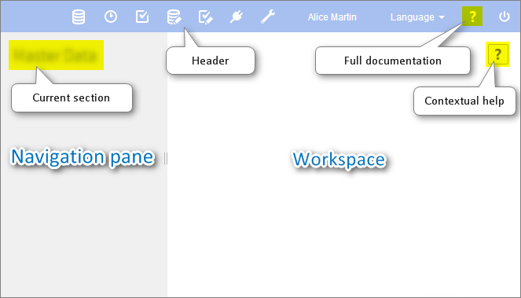
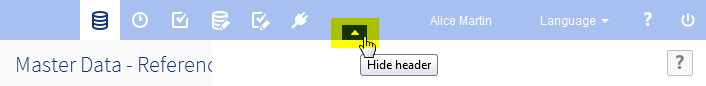
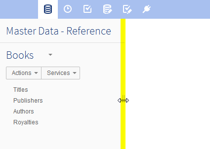

Using the EBX5 user interface
Section contents
Overview
The general layout of EBX5 workspaces is entirely customizable by a perspective administrator. If customized perspectives have been created, a drop-down menu 'Select perspective' allows switching between different perspectives.
The advanced perspective is accessible by default.
See alsoFront end administration
Advanced perspective
By default, the EBX5 advanced perspective is available to all users, but its access can be restricted to selected profiles. The view is separated into several general regions, referred to as the following in the documentation:
Header: Displays the user currently logged in, the user language preference selector (when more than one available), the perspective selector (when more than one available), a link to the product documentation, and a logout button.
Menu bar: The functional categories accessible to the current user.
Navigation pane: Displays context-dependent navigation options. For example: selecting a table in a data set, or a work item in a workflow.
Workspace: Main context-dependent work area of the interface. For example, the table selected in the navigation pane is displayed in the workspace, or the current work item is executed in the workspace.
The following functional areas are displayed according to the permissions of the current user: Data, Data Spaces, Modeling, Data Workflow, Data Services, and Administration.

Perspectives
The EBX5 perspectives is a highly configurable view with a target audience. Perspectives offer a simplified user interface to business users and can be assigned to one or more profile. This view is separated into several general regions, referred to as the following in the documentation:
Header: Displays the user currently logged in, the user language preference selector (when more than one available), the perspective selector (when more than one available), and a logout button.
Navigation pane: Displays the hierarchical menu as configured by the perspective administrator. It can be expanded or collapsed to access relevant entities and services related to the user's activity.
Workspace: Main context-dependent work area of the interface.
Perspectives are configured by authorized users. For more information on how to configure a perspective, see perspective administration.
Example of a hierarchical menu:

User interface features
Hiding the header
It is possible to hide the header in the user interface by hovering over it, then clicking the button that appears.

Resetting the navigation pane width
After having resized the width of the navigation pane, you can restore it to the default width by hovering over the border and double-clicking.

Where to find EBX5 help
In addition to the full standalone product documentation, help is accessible in various forms within the interface.
Contextual help
When you hover over an element that has contextual help, a question mark appears. Clicking on the question mark opens a panel with information on the element.

When a permalink to the element is available, a link button appears in the upper right corner of the panel.

 User guide table of contents
User guide table of contents